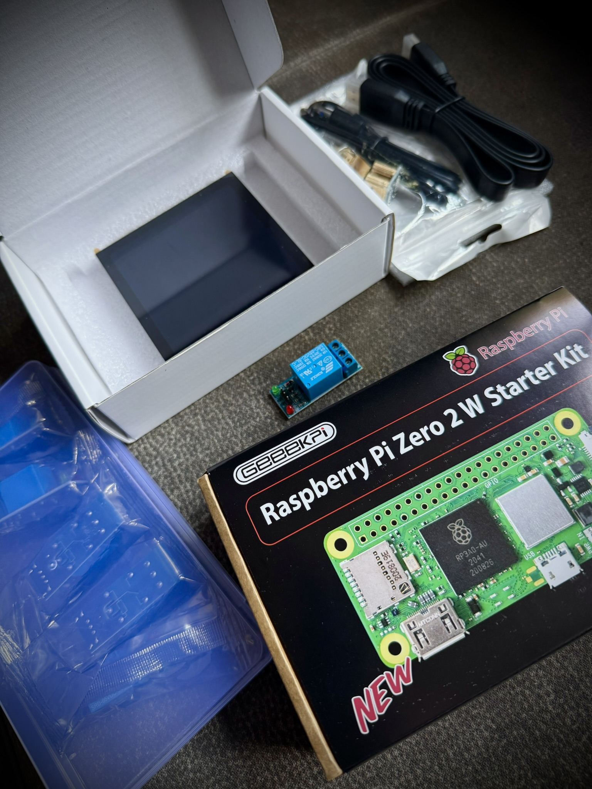

Overview
Ansage is a small dedicated hardware and automation project created for a museum.
Its purpose is simple: every evening, shortly before closing time, the system automatically plays a prerecorded announcement informing visitors that the museum will soon close.
The device is connected directly to the museum's existing public-address system, allowing the message to be heard through the normal building loudspeakers without requiring staff to trigger it manually.
Project details
The main objective was reliability and simplicity. The museum needed the same announcement to be played at a fixed time every evening without depending on a staff member remembering to start the audio manually.
A Raspberry Pi Zero 2 W was selected as the core of the system because it is compact, inexpensive and powerful enough for the required scheduling and audio playback.
A 5-inch touchscreen provides a simple local interface for the device, while a dedicated real-time clock module keeps accurate time even if the Raspberry Pi temporarily loses its network connection or is powered down.
At the configured time, the system automatically starts the prerecorded closing message and sends the audio output to the museum's existing loudspeaker installation.
Scheduled playback
The announcement is automatically triggered at the same configured time every evening.
Prerecorded message
A fixed high-quality audio recording ensures that visitors receive the same clear closing information every day.
Raspberry Pi Zero 2 W
The complete automation runs on a compact Raspberry Pi Zero 2 W installed as a dedicated appliance.
5-inch touchscreen
A small touchscreen provides local access to the system without requiring a keyboard, mouse or external computer.
Real-time clock
A dedicated time module maintains accurate scheduling even when no network time source is available.
Existing PA integration
The audio output is connected to the museum's existing loudspeaker system rather than requiring a separate set of speakers.
Technology
The system is built around a Raspberry Pi Zero 2 W running as a dedicated audio automation device.
The software handles the daily schedule and starts the selected audio file automatically at the configured time. The real-time clock module provides an independent time reference, while the touchscreen provides local visual control and status information.
Audio from the Raspberry Pi is routed into the museum's existing sound system, allowing the announcement to use the same loudspeakers as the rest of the building audio infrastructure.
The result is a self-contained installation that can remain in operation continuously and perform its task automatically every evening.
Media & demo
The images below can document the complete project: the Raspberry Pi Zero 2 W, touchscreen and real-time clock hardware, the local interface, the installed enclosure and the connection to the museum's audio system.
Additional screenshots can show the scheduling interface and the system during normal operation shortly before the automatic closing announcement is played.


Ansage — hardware & installation